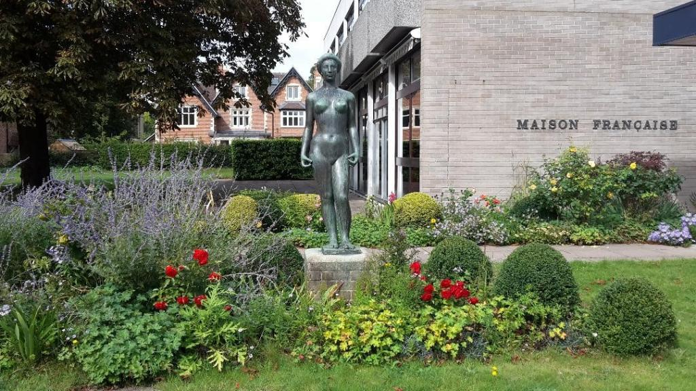
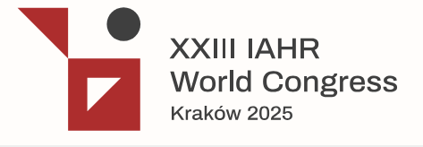
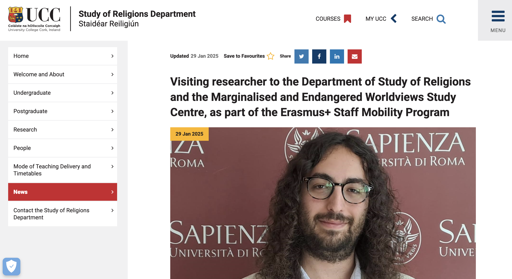

Ph.D. Candidate in Political Science
Droit, Religion, Entreprise et Société Research Unit (UMR 7354 DRES), CNRS and University of Strasbourg
Droit, Religion, Entreprise et Société Research Unit (UMR 7354 DRES), CNRS and University of Strasbourg
ReligiS Programme, University of Strasbourg
Faculty of Social Sciences, University of Strasbourg
SoLaRe Doctoral Laboratory (Societies, Secularities, Religions), ReligiS Programme, France 2030
Interdisciplinary Network of Pagan Studies (INOPS)
Correspondent for Turkey, EUREL (EUrope – RELigion) Project

From September 20 to 25, 2026, I will take part in the 22nd European Association for the Study of Religions (EASR) & International Association for the History of Religions (IAHR) Regional Conference in Bucharest. I am co-convening the panel "Pagan Studies: (Re)Enchanting the Old Ways" and the panel "'I have chosen my religion.': Historical Perspectives and Contemporary Issues of Religious Conversion", while also presenting two papers: "Navigating Invisibility: Methodological Reflections on the Study of Contemporary Pagan Movements in Turkey within a Transnational Framework" and "Exiting Islam: Conversion to New Religiosities as a Process of Negotiation".

I am co-organizing the exhibition "Religious Fieldwork, a Field Like Any Other? Silences, Withdrawals, Distrust, and Trust", presented in the Europe Hall of the MISHA at the University of Strasbourg from October 12 to November 16, 2026, as part of Axis 2 "Living Religion: Individual and Collective Experiences of Religion" of the SoLaRe doctoral laboratory (ANR ReligiS).

In June 2026, I returned to the Maison Française d'Oxford (USR 3129 — CNRS, French Ministry for Europe and Foreign Affairs, University of Oxford) as a Visiting Researcher, supported by the ReligiS mobility grant. This stay follows an earlier visit in July 2025 and continues my comparative work on the British matrix of contemporary Paganism and its resonance with Turkey's heterodox religiosities.

On April 17, 2026, I presented "Tengrism, Nationalism, and Secularisation Dynamics in Turkey's Modern Transformation" in the INOPS panel I co-convened at the 17th International Study of Religion in Eastern and Central Europe Association Conference — "(De-)Institutionalisation of Religious Life in Times of Geopolitical Turbulence", Bratislava.

On May 12, 2026, I gave a talk titled "Neopaganism, Nationalism, and Witchcraft: An Interdisciplinary Analysis of New Religiosities in Turkey" as part of the course "Shamanism and Paganism: 'Neo' Religious Traditions?" at the University of Fribourg.

Since September 2025, I have been a doctoral member of the Mediterranean, Religions and Societies Chair for the 2025–2026 academic year.

On August 25, 2025, I presented "New Actors in Turkey's Religious Landscape: Neo-Pagan Movements as Reactions to State Policies, Social Issues, and the Migration Crisis" at the roundtable "Green, Spiritual and Politically Aware" of the "Out of Europe: Studying Religion(s) in Interconnected Worlds" — XXIII World Congress of the International Association for the History of Religions (IAHR), Jagiellonian University, Krakow.

I am pleased to announce my participation in the upcoming 6th Congress on Middle Eastern and Muslim Worlds Studies, where I will be organizing and contributing to a double panel titled: “New Religious Modes and Alternative Spiritualities in Contemporary Turkish Society: Emergence, Practices, and Social Issues”. The double panel will consist of two interconnected panels: Panel 1: Emergence of New Spiritual Practices and Syncretic Religiosities in Contemporary Turkish Society, Panel 2: Resistance, Politicization, and the Reconfiguration of (A)Religious Identities in Contemporary Turkey. In the first panel, I will be presenting my paper titled "Why Paganism in the Contemporary Era? The Construction of Neopagan Identities Under the Influence of Islamo-Conservatism". In addition, I will also be speaking on a separate panel titled “La communauté des musulmans turcs de France: identité, organisation, politisation et interactions”. My talk, "Rites, Religion, and Diaspora: The Case of Turkish Muslims in Alsace", will examine how diasporic identities are negotiated through religious practice and communal life among Turkish Muslims in the Alsace region of France. These contributions aim to shed light on the evolving religious landscapes and identity formations both within Turkey and across its diaspora.

I am honored to present my paper, titled “Crafting Secularized Religious and Spiritual Identities in the Turkish Context,” at the 10th Biennial Conference of the European Society for the Study of Western Esotericism. This esteemed academic gathering offers a unique opportunity to share my current research with leading scholars in the field and to engage in meaningful dialogue and critical exchange.
This interdisciplinary workshop explores the revival of ancient religions in Europe, examining their resurgence, dissemination, institutional recognition, and sociopolitical impact. As non-monotheistic beliefs—polytheism, paganism, and animism—gain renewed interest and are increasingly leveraged in identity debates, this initiative brings together researchers from across Europe for a cross-disciplinary investigation of these evolving dynamics.

On March 20, 2025, a workshop on Nowruz will be held from 9 AM to 1 PM in the Alain Beretz amphitheater (Presidency Building, Nouveau Patio – University of Strasbourg). Organized by the Departments of Persian and Turkish Studies in partnership with Strass’Iran, this event will feature several presentations on the traditions and celebrations of Nowruz in different cultures. I will be giving a talk titled "Ergenekon and Neotengrism: Reflections on an Ideological and Symbolic Revision of Nevruz".

The Ontology of Religious Objects in Neo-Pagan Movements: From Productive Effort to Rapid Consumption as a Mode of Transmission

I am thrilled to share my recent experience as a visiting researcher at the Department of Study of Religions and the Marginalised and Endangered Worldviews Study Centre, University College Cork.